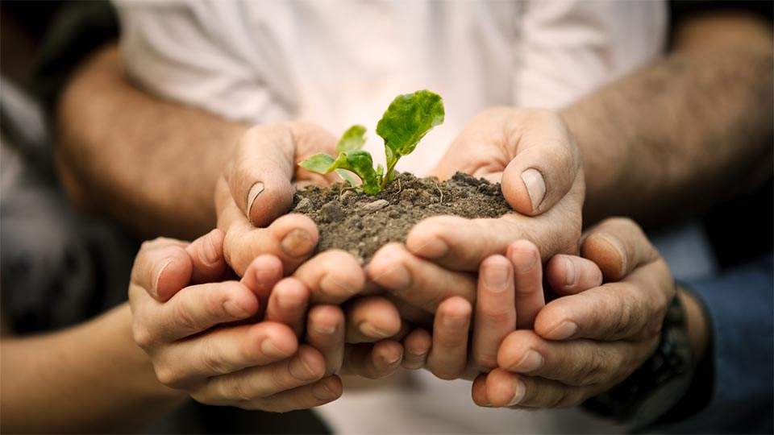

Everyone learns in school that trees "breathe in" carbon dioxide and "breathe out" carbon dioxide. And, coincidentally, carbone dioxide is one of today's biggest greenhouses gases in the atmosphere. So, doesn't it make sense to take advantage of this fact and just plant a tree? Planting a tree can be as simple as dropping a seed in soil and hoping it will rain, to following the full process. And, there are other added benefits, too. They provide shade, fruits, nice backgrounds for pictures, support for treehouses, and even maple syrup.

pic creds: isha.sadhguru.org
2. Pick up trash
When things degrade after being thrown out, they release methane, which, just like carbon dioxide, is up there in the atmosphere as a greenhouse gas. So, if we start recycling a little more, the amount of trash out there decreases, so the amount of methane out there decreases. Picking up trash also ensures that we don't kill animals that are living in that habitat. Small animals can get stuck in or choke on pieces of trash. Eventually, they will die from that
3. Cars
Here in the United States, or anywhere in the world, really, car owners have a tendency to start their car, leave it on, and go to get other work done before they actually use the car. This truly KIllS the environment. When there is no need for the car, why turn it on and just leave it to chug out greenhouse gases? It's not fair for the future generations to have to clean up this mess, called "pollution" that older generations made. So, let's start being a little more responsible and efficeint by making sure to not be overly lavish in how long we keep our cars on. Of course, some people do that to get their car warmed. However, to warm a car does not take as long as people leave their cars on for.

pic creds:clipartfest.org
4. SUPPORT GIRLS IN SCIENCES
Girls have some really great ideas that the world really needs to hear about (not that boys don't, or anything). The more ideas that we hear, the more possibilities there are for creating a better world. :)